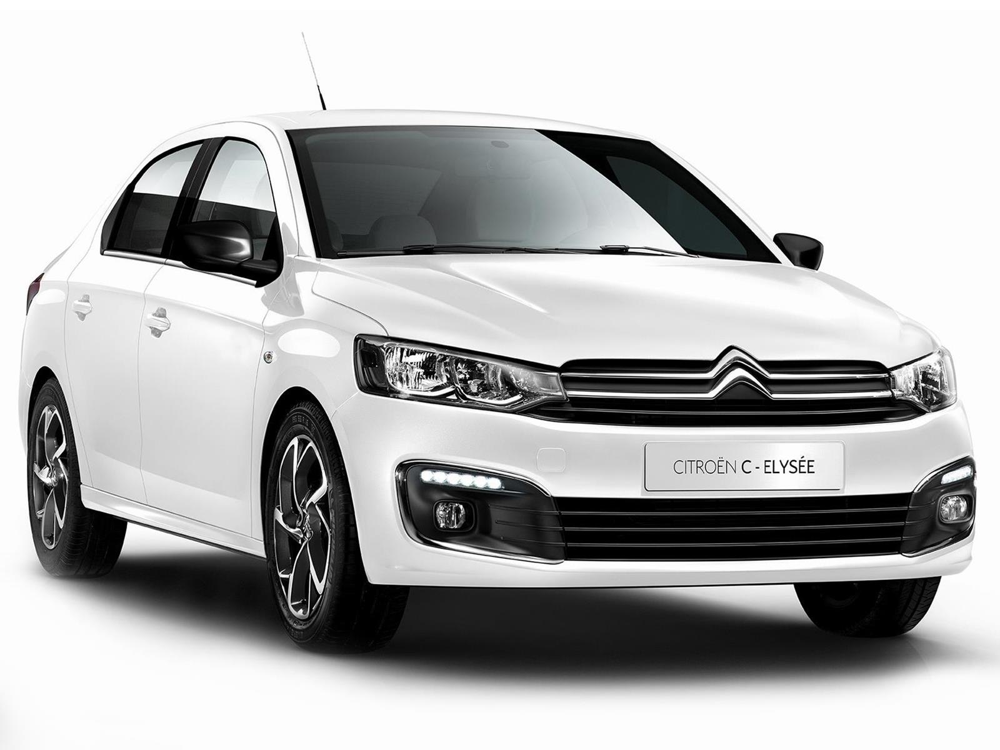

Citroen
Citroën es una marca francesa constructora de automóviles fundada en 1919 por André Citroën, propiedad de Stellantis. La marca creó entre otros modelos el utilitario Citroën H, el Citroën 2CV, el Citroën Mehari, el Citroën DS y también el Citroën CX